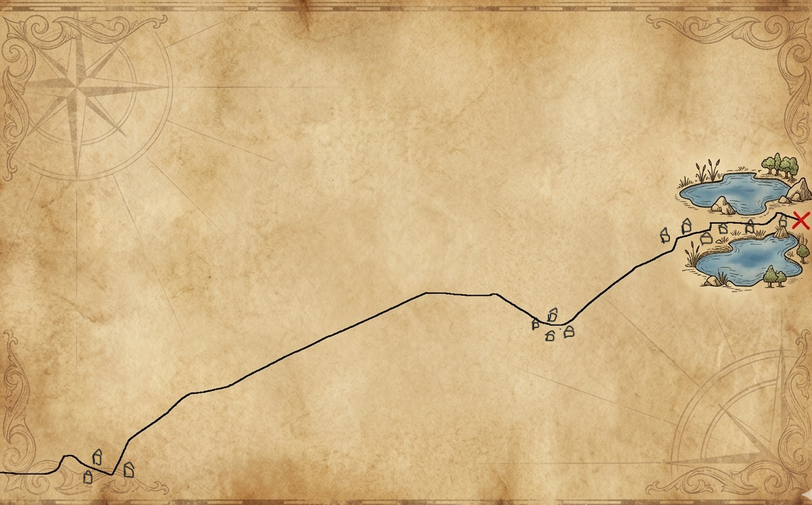

☩ Die Depesche des Suchenden ☩
Seid gegrüßt, edler Recke auf dem stählernen Ross!
Eure Reise durch das ferne Isergebirge hat Euch weit geführt, doch das Ende Eurer Junggesellen-Tage ist noch nicht besiegelt. Bevor Ihr das Tor zur letzten Taverne durchschreitet und der Freiheit entsagt, verlangt die Gilde einen letzten Beweis Eurer Sinne und Eures Mutes.
Blicket auf das Pergament, das man Euch reichte. Die Linie ist Euer Schicksal, die Zacken Euer Schmerz. Sie zeigt den Pfad des Drachenrückens, den Ihr nun bezwingen müsst.
Eure Quest:
Folget dem geschundenen Pfad gen Osten, dorthin, wo die Sonne den Kamm küsst.
Euer Ziel ist der Ort, an dem die zwei blauen Augen der Erde
(die Seen bei den Koordinaten) in der Tiefe ruhen.
Doch achtet wohl auf das Wegesbord!
An der Stelle, wo der Pfad sich neigt und der Blick auf das große Ziel frei wird, suchet nach dem Wappen des gelb-weißen Banners.
